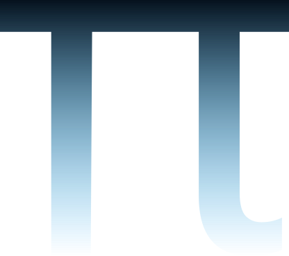

Meu nome é Téo Teixeira, e desde que me entendo por gente, sou movido pela curiosidade — aquela vontade quase teimosa de entender como as coisas funcionam. Aqui compartilho ideias, projetos e tudo o que me ajuda a transformar códigos em experiências, e desafios em soluções reais.
Escolhi a tecnologia como caminho, mas antes disso escolhi a lógica, a criação e a beleza dos padrões, que hoje se refletem em tudo o que faço.
O símbolo do Pi (π) no meu logo não está ali por acaso: ele representa o infinito da descoberta, a matemática da vida, e o compromisso com soluções que não sejam apenas funcionais — mas inteligentes, equilibradas e humanas.
Sou especializado em HTML, CSS, JavaScript, React, Angular e Wordpress — tecnologias que me permitem construir interfaces modernas e com foco total na experiência do usuário.